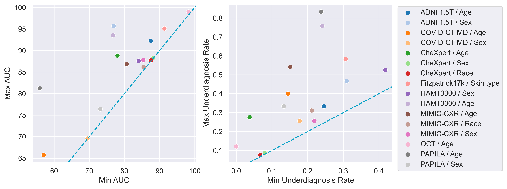
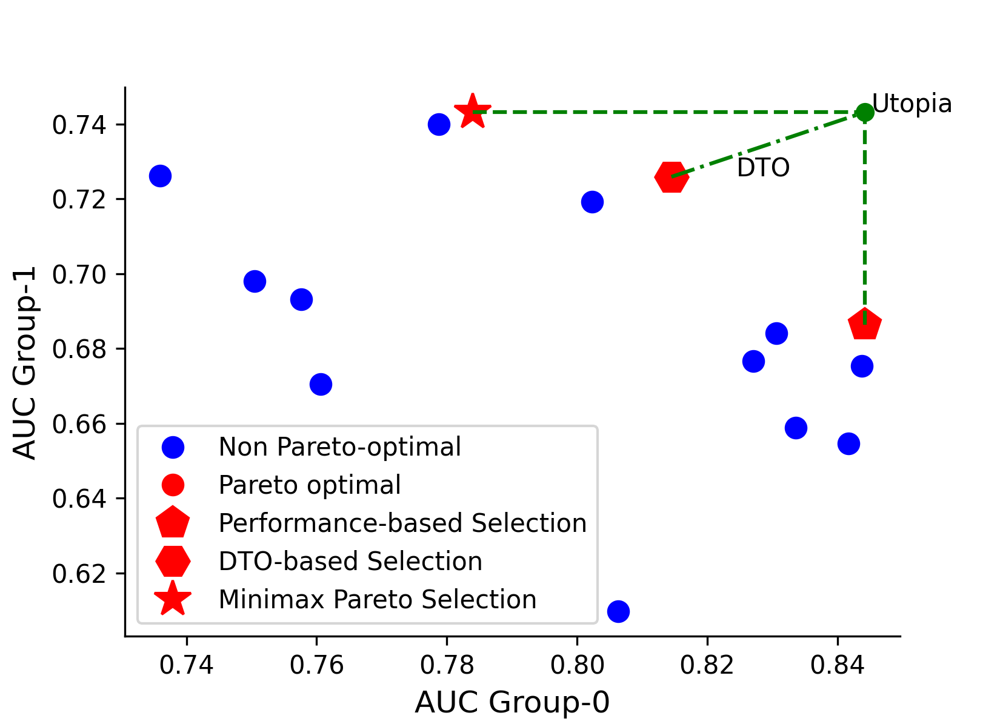
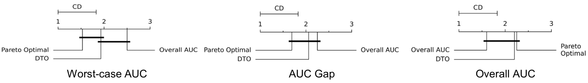
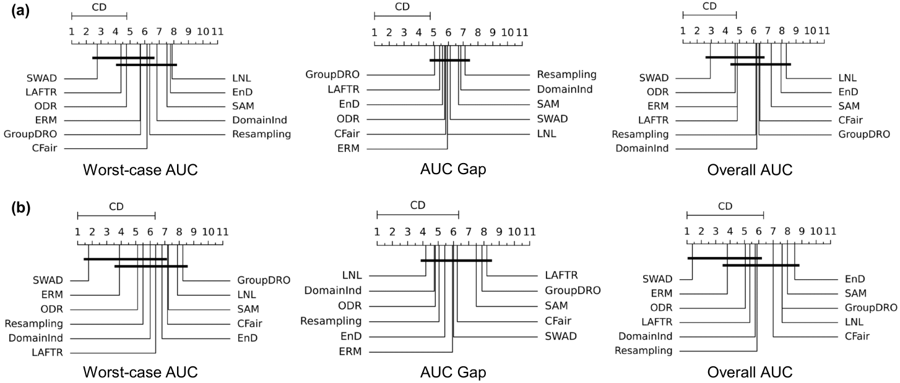

MEDFAIR: Benchmarking Fairness for Medical Imaging TL;DR: We develop a fairness benchmark for medical imaging and find that no method significantly outperforms ERM.
A multitude of work has shown that machine learning-based medical diagnosis systems can be biased against certain subgroups of people. This has motivated a growing number of bias mitigation algorithms that aim to address fairness issues in machine learning. However, it is difficult to compare their effectiveness in medical imaging for two reasons. First, there is little consensus on the criteria to assess fairness. Second, existing bias mitigation algorithms are developed under different settings, e.g., datasets, model selection strategies, backbones, and fairness metrics, making a direct comparison and evaluation based on existing results impossible. In this work, we introduce MEDFAIR, a framework to benchmark the fairness of machine learning models for medical imaging. MEDFAIR covers eleven algorithms from various categories, nine datasets from different imaging modalities, and three model selection criteria. Through extensive experiments, we find that the under-studied issue of model selection criterion can have a significant impact on fairness outcomes; while in contrast, state-of-the-art bias mitigation algorithms do not significantly improve fairness outcomes over empirical risk minimization(ERM) in both in-distribution and out-of-distribution settings. We evaluate fairness from various perspectives and make recommendations for different medical application scenarios that require different ethical principles. Our framework provides a reproducible and easy-to-use entry point for the development and evaluation of future bias mitigation algorithms in deep learning.
Motivation
Machine learning (ML) models have been found to demonstrate a systematic bias
toward certain groups of people defined by race, gender, age, and even the health insurance type with worse performance [2][3][4].
The bias also exists in different types of medical data, such as chest X-ray, CT scans, skin dermatology, etc. A biased decision-making system
is socially and ethically detrimental, especially in life-changing scenarios such as healthcare. Given the importance of ensuring fairness in medical applications and the special characteristics of medical data, we
argue that a systematic and rigorous benchmark is needed to evaluate the bias mitigation algorithms for medical imaging.
Bias widely exists in ML models
Firstly, we train ERM on different datasets and sensitive attributes, and select models using the regular overall
performance-based strategy. For each dataset and sensitive attribute, we calculate the maximum and minimum AUC
and underdiagnosis rate among subgroups, where we use FNR for malignant label and FPR for "No Finding" label
as the underdiagnosis rate. This confirms a problem that has been widely discussed [1] but, until now, has never been systematically quantified for deep learning across a comprehensive variety of modalities,
diagnosis tasks, and sensitive attributes.

Model selection strategies
The trade-off between fairness and utility has been widely noted [5][6], making
hyper-parameter selection criteria particularly difficult to define given the multi-objective nature of optimising for
potentially conflicting fairness and utility. Previous work differs greatly in model selection. Some use conventional
utility-based selection strategies, e.g., overall validation loss, while others have no explicit specification. To investigate the influence of model selection
strategies on the final performance, we study three prevalent selection strategies in MEDFAIR, i.e. overall performance-based, Minimax Pareto selection, and Distance to Optimal (DTO).

Model selection matters
We conduct a hyper-parameter sweep for ERM while
training on all the datasets, and then compute the metrics and the relative ranks of the three model selection strategies.
The results, including statistical significance tests are summarised in the Figure below. Selection strategies not connected by the bold bars have
significantly different performance. The results show that for the worst-case AUC metric(left), the Pareto-optimal
model selection strategy is statistically significantly better than the overall AUC model selection strategy. Meanwhile, in terms of the overall AUC metric
(right) the Pareto selection strategy is not significantly worse than the overall model selection strategy. Thus, even
without any explicit bias mitigation algorithm, max-min fairness can be significantly improved simply by adopting the
corresponding model selection strategy in place of the standard overall strategy - and this intervention need not impose
a significant cost to the overall AUC.

No method outperforms ERM with statistical significance
We next ask whether any of the purpose-designed bias mitigation algorithms is significantly better than ERM, and
which algorithm is best overall? We report the Nemenyi post-hoc test results on worst-group AUC, AUC gap, and overall AUC
in Figure 5 for in-distribution(top row) and out-of-distribution(bottom row) settings.
For in-distribution, while there are some significant performance differences, no method outperforms ERM significantly
for any metric: ERM is always in the highest rank group of algorithms without significant differences. The conclusion
is the same for the out-of-distribution testing, and some methods that rank higher than ERM in the in-distribution setting
perform worse than ERM when deployed to an unseen domain, suggesting that preserving fairness across domain-shift
is challenging.

MEDFAIR as an easy-to-use codebase
We implement MEDFAIR using PyTorch framework. We show example codes to demonstrate how to incorporate new
datasets and algorithms. A detailed documentation can be found here.
Adding new datasets
We implement a base dataset class BaseDataset, and new dataset can be added by creating a new file and inheriting it.
We implement a base algorithm class BaseNet, where contains basic configuration and regular training/validation/testing
loop. A new algorithm can be added by inheriting it and rewriting the training loop, loss, etc. if needed.
For example, SAM [7] algorithm can be added by re-implementing the training loop.
class SAM(BaseNet):
def __init__(self, opt, wandb):
super(SAM, self).__init__(opt, wandb)
def train(self, loader):
self.network.train()
for i, (index, images, targets, sensitive_attr) in enumerate(loader):
enable_running_stats(self.network)
outputs, _ = self.network(images)
loss = self._criterion(outputs, targets)
loss.mean().backward()
self.optimizer.first_step(zero_grad = True)
self.scheduler.step()
disable_running_stats(self.network)
outputs, _ = self.network(images)
self._criterion(outputs, targets).mean().backward()
self.optimizer.second_step(zero_grad = True)
self.scheduler.step()